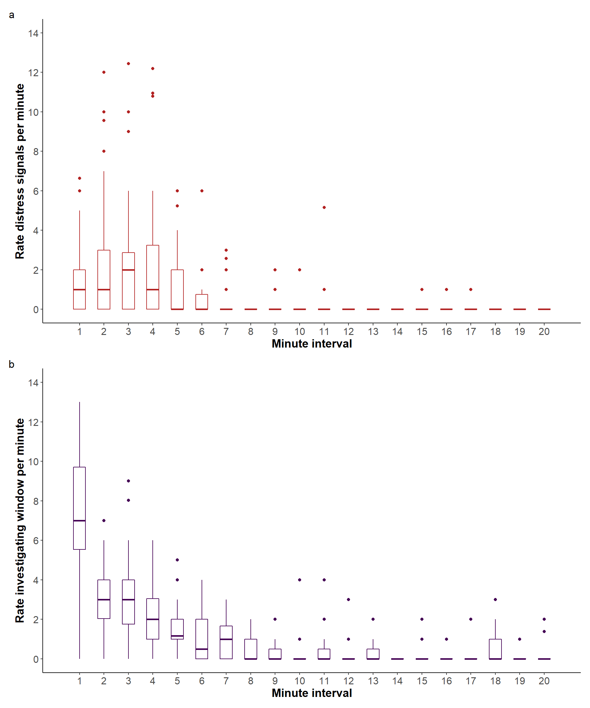

library(tidyverse) # tidy universe
library(patchwork) # combine plotsDistress & investigasting window
Libraries
set.seed(1989)Data
Data analysis from the point of view of the helping pigs.
Read data
dat <- read_csv("../data/distress-window-time.csv")Rows: 427 Columns: 30
── Column specification ────────────────────────────────────────────────────────
Delimiter: ","
chr (9): trapped.pig.uniq.id, sex, location.test.box, min.status, outcome1...
dbl (20): sow, group.trapped.pig.order, interval_count, interval.dur, numbe...
date (1): trapped.date
ℹ Use `spec()` to retrieve the full column specification for this data.
ℹ Specify the column types or set `show_col_types = FALSE` to quiet this message.Adjust data types
dat <- dat %>%
# factors
mutate_at(vars(group.trapped.pig.order), ~as.factor(.)) %>%
# total distress
mutate(distress = screams+escapes) %>%
# rates per min
mutate(distress.rate.per.min = distress/(interval.dur/60)) %>%
mutate(window.rate.per.min = invest.window/(interval.dur/60))
str(dat)tibble [427 × 30] (S3: tbl_df/tbl/data.frame)
$ trapped.pig.uniq.id : chr [1:427] "DG2_W_2" "DG2_W_3" "DG2_W_4" "DG2_W_8" ...
$ sow : num [1:427] 6142 6142 5931 5764 5764 ...
$ sex : chr [1:427] "Female" "Female" "Male" "Female" ...
$ group.trapped.pig.order: Factor w/ 10 levels "1","2","3","4",..: 5 7 2 6 3 9 8 9 6 7 ...
$ location.test.box : chr [1:427] "Front" "Side" "Front" "Side" ...
$ interval_count : num [1:427] 1 1 1 1 1 1 1 1 1 1 ...
$ interval.dur : num [1:427] 10.3 19.8 57.1 29.2 15.8 ...
$ number.of.intervals : num [1:427] 1 1 1 1 1 1 1 1 1 1 ...
$ min.status : chr [1:427] "free" "free" "free" "free" ...
$ screams : num [1:427] 0 0 0 0 0 1 0 0 0 0 ...
$ screams.prop : num [1:427] 0 0 0 0 0 ...
$ escapes : num [1:427] 0 0 2 0 0 1 2 0 1 0 ...
$ invest.door : num [1:427] 2 1 7 3 3 0 4 1 6 1 ...
$ invest.door.prop : num [1:427] 0.1938 0.0505 0.1225 0.1026 0.1899 ...
$ invest.window : num [1:427] 2 4 7 3 5 3 5 3 5 4 ...
$ invest.window.prop : num [1:427] 0.194 0.202 0.123 0.103 0.316 ...
$ outcome1 : chr [1:427] "Helped" "Helped" "Helped" "Helped" ...
$ outcome2 : chr [1:427] "Trapped_under_3_mns" "Trapped_under_3_mns" "Trapped_under_3_mns" "Trapped_under_3_mns" ...
$ outcome3 : chr [1:427] "Full_trial" "Full_trial" "Full_trial" "Full_trial" ...
$ lat.helped.min : num [1:427] 0.21 0.31 0.948 0.484 0.287 ...
$ trapped.date : Date[1:427], format: "2020-09-09" "2020-09-10" ...
$ uniq.group : chr [1:427] "DG2_W" "DG2_W" "DG2_W" "DG2_W" ...
$ time.trial.begins : num [1:427] 13 9.9 15.53 14.2 9.35 ...
$ change.cort : num [1:427] 5.06 NA 3.89 3.33 NA ...
$ time.post.sample : num [1:427] 13.4 NA 16 14.6 NA ...
$ interval_time : chr [1:427] "19.040-29.360" "51.840-71.640" "29.800-86.920" "50.600-79.840" ...
$ ordinal.group.order : num [1:427] 5 7 2 6 3 9 8 9 6 7 ...
$ distress : num [1:427] 0 0 2 0 0 2 2 0 1 0 ...
$ distress.rate.per.min : num [1:427] 0 0 2.1 0 0 ...
$ window.rate.per.min : num [1:427] 11.63 12.12 7.35 6.16 18.99 ...Plot
- visualize distress signal over time
plot.d <- dat %>%
ggplot(aes(x = interval_count,
y = distress.rate.per.min,
group = interval_count)) +
geom_boxplot(width = 0.5, color = "#b22222") +
scale_x_continuous(limits = c(0.5, 20.5),
breaks = seq(1, 20, by = 1)) +
scale_y_continuous(limits = c(0, 14),
breaks = seq(0, 14, by = 2)) +
labs(x = "Minute interval",
y = "Rate distress signals per minute") +
my_theme +
theme(legend.position = "none")- visualize investigating window over time
plot.w <- dat %>%
ggplot(aes(x = interval_count,
y = window.rate.per.min,
group = interval_count)) +
geom_boxplot(width = 0.5, color = "#440154FF") +
scale_x_continuous(limits = c(0.5, 20.5),
breaks = seq(1, 20, by = 1)) +
scale_y_continuous(limits = c(0, 14),
breaks = seq(0, 14, by = 2)) +
labs(x = "Minute interval",
y = "Rate investigating window per minute") +
my_theme +
theme(legend.position = "none")- combine plots
plot <- plot.d/plot.wplot +
plot_annotation(tag_levels = 'a')
How to cite R
“All analyses were performed using R Statistical Software (version 4.2.0; R Core Team 2022)”.
Reference: R Core Team (2022). R: A language and environment for statistical computing. R Foundation for Statistical Computing, Vienna, Austria. URL https://www.R-project.org/.
citation()
To cite R in publications use:
R Core Team (2022). R: A language and environment for statistical
computing. R Foundation for Statistical Computing, Vienna, Austria.
URL https://www.R-project.org/.
Ein BibTeX-Eintrag für LaTeX-Benutzer ist
@Manual{,
title = {R: A Language and Environment for Statistical Computing},
author = {{R Core Team}},
organization = {R Foundation for Statistical Computing},
address = {Vienna, Austria},
year = {2022},
url = {https://www.R-project.org/},
}
We have invested a lot of time and effort in creating R, please cite it
when using it for data analysis. See also 'citation("pkgname")' for
citing R packages.version$version.string[1] "R version 4.2.0 (2022-04-22 ucrt)"citation("tidyverse")
Um Paket 'tidyverse' in Publikationen zu zitieren, nutzen Sie bitte:
Wickham et al., (2019). Welcome to the tidyverse. Journal of Open
Source Software, 4(43), 1686, https://doi.org/10.21105/joss.01686
Ein BibTeX-Eintrag für LaTeX-Benutzer ist
@Article{,
title = {Welcome to the {tidyverse}},
author = {Hadley Wickham and Mara Averick and Jennifer Bryan and Winston Chang and Lucy D'Agostino McGowan and Romain François and Garrett Grolemund and Alex Hayes and Lionel Henry and Jim Hester and Max Kuhn and Thomas Lin Pedersen and Evan Miller and Stephan Milton Bache and Kirill Müller and Jeroen Ooms and David Robinson and Dana Paige Seidel and Vitalie Spinu and Kohske Takahashi and Davis Vaughan and Claus Wilke and Kara Woo and Hiroaki Yutani},
year = {2019},
journal = {Journal of Open Source Software},
volume = {4},
number = {43},
pages = {1686},
doi = {10.21105/joss.01686},
}citation("patchwork")
Um Paket 'patchwork' in Publikationen zu zitieren, nutzen Sie bitte:
Pedersen T (2020). _patchwork: The Composer of Plots_. R package
version 1.1.1, <https://CRAN.R-project.org/package=patchwork>.
Ein BibTeX-Eintrag für LaTeX-Benutzer ist
@Manual{,
title = {patchwork: The Composer of Plots},
author = {Thomas Lin Pedersen},
year = {2020},
note = {R package version 1.1.1},
url = {https://CRAN.R-project.org/package=patchwork},
}Session Info
sessionInfo()R version 4.2.0 (2022-04-22 ucrt)
Platform: x86_64-w64-mingw32/x64 (64-bit)
Running under: Windows 10 x64 (build 19045)
Matrix products: default
locale:
[1] LC_COLLATE=German_Germany.utf8 LC_CTYPE=German_Germany.utf8
[3] LC_MONETARY=German_Germany.utf8 LC_NUMERIC=C
[5] LC_TIME=German_Germany.utf8
attached base packages:
[1] stats graphics grDevices utils datasets methods base
other attached packages:
[1] patchwork_1.1.1 forcats_0.5.1 stringr_1.4.0 dplyr_1.0.9
[5] purrr_0.3.4 readr_2.1.2 tidyr_1.2.0 tibble_3.1.7
[9] ggplot2_3.3.6 tidyverse_1.3.1
loaded via a namespace (and not attached):
[1] tidyselect_1.1.2 xfun_0.31 haven_2.5.0 colorspace_2.0-3
[5] vctrs_0.4.1 generics_0.1.3 htmltools_0.5.2 yaml_2.3.5
[9] utf8_1.2.2 rlang_1.0.6 pillar_1.8.1 glue_1.6.2
[13] withr_2.5.0 DBI_1.1.3 bit64_4.0.5 dbplyr_2.2.1
[17] modelr_0.1.9 readxl_1.4.0 lifecycle_1.0.2 munsell_0.5.0
[21] gtable_0.3.1 cellranger_1.1.0 rvest_1.0.3 htmlwidgets_1.5.4
[25] evaluate_0.16 knitr_1.40 tzdb_0.3.0 fastmap_1.1.0
[29] parallel_4.2.0 fansi_1.0.3 broom_1.0.1 backports_1.4.1
[33] scales_1.2.1 vroom_1.5.7 jsonlite_1.8.0 farver_2.1.0
[37] bit_4.0.4 fs_1.5.2 hms_1.1.2 digest_0.6.29
[41] stringi_1.7.6 grid_4.2.0 cli_3.3.0 tools_4.2.0
[45] magrittr_2.0.3 crayon_1.5.1 pkgconfig_2.0.3 ellipsis_0.3.2
[49] xml2_1.3.3 reprex_2.0.2 lubridate_1.8.0 assertthat_0.2.1
[53] rmarkdown_2.16 httr_1.4.4 rstudioapi_0.14 R6_2.5.1
[57] compiler_4.2.0